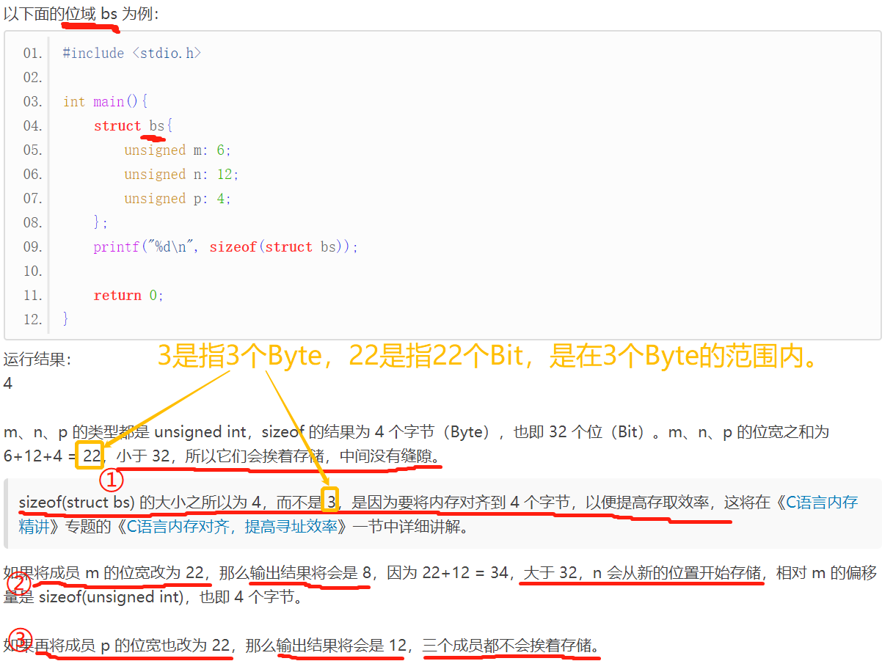

【本文结构】
- 5、共用体
- 6、内存的大小端模式及判别方式
- 7、位域（位段）
- 8、位运算
- 使用位运算对数据或文件内容进行加密
- 在C语言中，还有另外一种和结构体非常类似的语法，叫做共用体（Union），它的定义格式为：（共用体有时也被称为联合或者联合体。）
union 共用体名{
成员列表
};
- 用 自定义的共用体类型 来 定义共用体变量 的方式与结构体一样。
- 结构体和共用体的区别在于：
- 共用体的所有成员占用同一段内存，其占用的内存等于最长的成员占用的内存，修改一个成员会影响其余所有成员。
- 至于是如何影响，与数据在内存中的存储模式有关（大端模式 or 小端模式，下一节将会进行介绍）。
- 结构体的各个成员会占用不同的内存，互相之间没有影响，其占用的内存大于等于所有成员占用的内存的总和（成员之间可能会存在缝隙）。
- 共用体使用了内存覆盖技术，同一时刻只能保存一个成员的值，如果对新的成员赋值，就会把原来成员的值覆盖掉。
- 在定义共用体 data 的同时创建变量 a
union data{
int n;
char ch;
double f;
} a;
- 共用体 data 中，成员 f 占用的内存最多，为 8 个字节，所以 data 类型的变量 a 也占用 8 个字节的内存
- 共用体的应用
- 共用体在一般的编程中应用较少，在单片机中应用较多。
- 对于 PC 机，经常使用到的一个实例是： 现有一张关于学生信息和教师信息的表格。学生信息包括姓名、编号、性别、职业、分数，教师的信息包括姓名、编号、性别、职业、教学科目。（其它内容见原网页） 可以看出，学生和教师所包含的数据是不同的（具体是在“分数”和“教学科目”这两个字段）。现在要求把这些信息放在同一个表格中，并设计程序输入人员信息然后输出。（可以设计一个 包含共用体作为成员的结构体数组 来存储这张表）
#define TOTAL 4 //总人数
struct {
char name[20]; //姓名
int num; //编号
char sex; //性别
char profession; //职业，对于学生来说 profession = 's'，对于老师来说 profession = 't'
union {
float socre; //（学生的）分数
char course; //（老师的）教学科目
} sc;
} individuals[ TOTAL ];
//输入人员信息
scanf("%s %d %c %c", individuals[i].name, &( individuals[i].num ), &( individuals[i].sex ), &( individuals[i].profession) );
if (individuals[i].profession == 's') //如果是学生
{
scanf("%f", &individuals[i].sc.score);
}
else //如果是老师
{
scanf("%s", individuals[i].sc.course);
}
/*参考链接：http://c.biancheng.net/view/2035.html */
#include <stdio.h>
#include <stdlib.h>
#define TOTAL 1 //总人数
struct {
char name[20];
int num;
char sex;
char profession;
union {
float score;
char course[20];
} sc;
} individuals[TOTAL];
int main()
{
int i;
//individuals[0] = { "HanXiaoXiao", 501, 'f', 's', 89.5 }; //在这里不可以用这种方式对结构体数组变量赋值，只有在定义的时候初始化才能用这种方式来赋值，其它时候只能逐个成员赋值
//individuals[0].name = "HanXiaoXiao"; //individuals[0].name = "HanXiaoXiao"; //individuals[0].name[] = "HanXiaoXiao"; 这三种方式都是错的
//因为字符数组只有在定义时才能将整个字符串一次性地赋值给它，一旦定义完了，就只能一个字符一个字符地赋值了。
//该结构体的第一个成员是字符数组
individuals[0].name[0] = 'H', individuals[0].name[1] = 'a', individuals[0].name[2] = 'n';
individuals[0].name[3] = 'X', individuals[0].name[4] = 'i', individuals[0].name[5] = 'a', individuals[0].name[6]= 'o';
individuals[0].name[7] = 'X', individuals[0].name[8] = 'i', individuals[0].name[9] = 'a', individuals[0].name[10] = 'o';
//individuals[0].name[11] = '\n'; //这个不用自己加
individuals[0].num = 501;
individuals[0].sex = 'f';
individuals[0].profession = 's';
individuals[0].sc.score = 89.5;
printf("sizeof of individuals[0].name = %d\n", sizeof(individuals[0].name)); //20
printf("individuals[0].name = %#X\n", individuals[0].name);
printf("*individuals[0].name = %c\n", *individuals[0].name); //H
printf("individuals[0].name = %s\n", individuals[0].name); //HanXiaoXiao，无论上面有没有加 individuals[0].name[11] = '\n'; 都可以输出
printf("&individuals[0].name[0] = %s\n", &individuals[0].name[0]); //HanXiaoXiao
/*
//printf("*individuals[0].name = %s\n", *individuals[0].name); //这个语句无法输出，无论上面有没有加 individuals[0].name[11] = '\n';
//char *str = individuals[0].name;
//printf("%s\n", *str); //这个语句无法输出，无论上面有没有加 individuals[0].name[11] = '\n';
//printf("%s\n", str); //HanXiaoXiao，无论上面有没有加 individuals[0].name[11] = '\n'; 都可以输出
*/
//输入人员信息
//for (i = 0; i < TOTAL; i++)
//{
// puts("Please input individual's information:");
// scanf("%s %d %c %c", individuals[i].name, &(individuals[i].num), &(individuals[i].sex), &(individuals[i].profession));
// if (individuals[i].profession == 's') //如果是学生
// {
// scanf("%f", &individuals[i].sc.score);
// }
// else //如果是老师
// {
// scanf("%s", individuals[i].sc.course);
// }
// fflush(stdin);
//}
//输出人员信息
printf("\nName\t\tNum\tSex\tProfession\tScore / Course\n");
for (i = 0; i < TOTAL; i++)
{
if (individuals[i].profession == 's')
{
printf("%s\t%d\t%c\t%c\t\t%f\n", individuals[i].name, individuals[i].num, individuals[i].sex,
individuals[i].profession, individuals[i].sc.score);
}
else
{
printf("%s\t%d\t%c\t%c\t\t%s\n", individuals[i].name, individuals[i].num, individuals[i].sex,
individuals[i].profession, individuals[i].sc.course);
}
}
return 0;
}
- 大端和小端是指数据在内存中的存储模式，它由 CPU 决定：
- 大端模式（Big-endian）是指将数据的低位（比如 0x1234 中的 34 就是低位）放在内存的高地址上，而数据的高位（比如 0x1234 中的 12 就是高位）放在内存的低地址上。这种存储模式有点儿类似于把数据当作字符串顺序处理，地址由小到大增加，而数据从高位往低位存放。
- 小端模式（Little-endian）是指将数据的低位放在内存的低地址上，而数据的高位放在内存的高地址上。这种存储模式将地址的高低和数据的大小结合起来，高地址存放数值较大的部分，低地址存放数值较小的部分，这和我们的思维习惯是一致，比较容易理解。
- 我们的 PC 机上使用的是 X86 结构的 CPU，它是小端模式；很多 ARM、DSP 也是小端模式（部分 ARM 处理器还可以由硬件来选择是大端模式还是小端模式）。
- 51 单片机是大端模式。
- 借助共用体，我们可以检测 CPU 是大端模式还是小端模式。
- 位域： 在结构体定义时，我们可以指定某个成员变量所占用的二进制位数（Bit），这就是位域。它是C语言提供的另一种数据结构。
struct bs{
unsigned m;
unsigned n: 4;
unsigned ch: 6;
}
- : 后面的数字用来限定成员变量占用的位数。
- 成员 m 没有限制，根据数据类型即可推算出它占用 4 个字节（Byte）的内存。
- 成员 n、ch 被 : 后面的数字限制，不能再根据数据类型计算长度，它们分别占用 4、6 位（Bit）的内存。
- C语言标准规定，位域的宽度不能超过它所依附的数据类型的长度。通俗地讲，成员变量都是有类型的，这个类型限制了成员变量的最大长度， : 后面的数字不能超过这个长度。
- C语言标准还规定，只有有限的几种数据类型可以用于位域。在 ANSI C 中，这几种数据类型是 int、signed int 和 unsigned int（int 默认就是 signed int）；到了 C99，_Bool 也被支持了。
- 但编译器在具体实现时都进行了扩展，额外支持了 char、signed char、unsigned char 以及 enum 类型，所以上面的代码虽然不符合C语言标准，但它依然能够被编译器支持。
- 位域的存储
- C语言标准并没有规定位域的具体存储方式，不同的编译器有不同的实现，但它们都尽量压缩存储空间。 位域的具体存储规则如下：
- 1）当相邻成员的类型相同时，如果它们的位宽之和小于类型的 sizeof 大小，那么后面的成员紧邻前一个成员存储，直到不能容纳为止；如果它们的位宽之和大于类型的 sizeof 大小，那么后面的成员将从新的存储单元开始，其偏移量为类型大小的整数倍。


- 3) 如果成员之间穿插着非位域成员，那么不会进行压缩。
- 位域成员往往不占用完整的字节，有时候也不处于字节的开头位置，因此使用 & 获取位域成员的地址是没有意义的，C语言也禁止这样做。地址是字节（Byte）的编号，而不是位（Bit）的编号。
- 无名位域

- 位运算，就是对一个比特（Bit）位进行操作。
- C语言提供了六种位运算符：
运算符 | & | | | ^ | ~ | << | >> |
说明 | 按位与 | 按位或 | 按位异或 | 取反 | 左移 | 右移 |
单目运算符 （右结合性） | ||||||
参与^运算两个二进制位： 不同时，结果为 1， 相同时，结果为 0。 例如： 0^1为1， 0^0为0， 1^1为0。 | 是对参与运算的二进制位取反。 例如： ~1为0， ~0为1， 这和逻辑运算中的!非常类似。 | 左移运算符<<用来把操作数的各个二进制位全部左移若干位， 高位丢弃， 低位补0。 | 右移运算符>>用来把操作数的各个二进制位全部右移若干位， 低位丢弃， 高位补 0 或 1。 如果最高位是 0，那么就补 0； 如果最高位是 1，那么就补 1。 | |||
按位与运算通常用来对某些位清 0，或者保留某些位。 例如： 要把 n 的高 16 位清 0 ，保留低 16 位，可以进行n & 0XFFFF 运算。 0XFFFF 在内存中的存储形式为 0000 0000 -- 0000 0000 -- 1111 1111 -- 1111 1111 | 按位或运算可以用来将某些位置 1，或者保留某些位。 例如： 要把 n 的高 16 位置 1，保留低 16 位，可以进行n | 0XFFFF0000 运算。0XFFFF0000 在内存中的存储形式为 1111 1111 -- 1111 1111 -- 0000 0000 -- 0000 0000 | 按位异或运算可以用来将某些二进制位反转。 例如： 要把 n 的高 16 位反转，保留低 16 位，可以进行n ^ 0XFFFF0000 运算。0XFFFF0000 在内存中的存储形式为 1111 1111 -- 1111 1111 -- 0000 0000 -- 0000 0000 | 如果数据较小，被丢弃的高位不包含 1，那么左移 n 位相当于： 乘以 2 的 n 次方。 | 如果被丢弃的低位不包含 1，那么右移 n 位相当于： 除以 2 的 n 次方 （但被移除的位中经常会包含 1）。 |
- C语言中不能直接使用二进制，& 两边的操作数可以是十进制、八进制、十六进制，它们在内存中最终都是以二进制形式存储，& 就是对这些内存中的二进制位进行运算。其他的位运算符也是相同的道理。

- 数据加密解密的原理也很简单，就是使用异或运算： 两次异或运算后还是原来的结果。
- 这就是加密的关键技术：
- 通过一次异或运算，生成密文，密文没有可读性，与原文风马牛不相及，这就是加密；
- 密文再经过一次异或运算，就会还原成原文，这就是解密的过程；
- 加密和解密需要相同的密钥，如果密钥不对，是无法成功解密的。
- 上面的加密算法称为对称加密算法，加密和解密使用同一个密钥。
- 如果加密和解密的密钥不同，则称为非对称加密算法。在非对称算法中，加密的密钥称为公钥，解密的密钥称为私钥，只知道公钥是无法解密的，还必须知道私钥。
- 一个小知识点：
- 程序中的 itoa() 位于 stdlib.h 头文件，它并不是一个标准的C函数，只有Windows下有，更多信息请猛击：C语言itoa()函数和atoi()函数详解